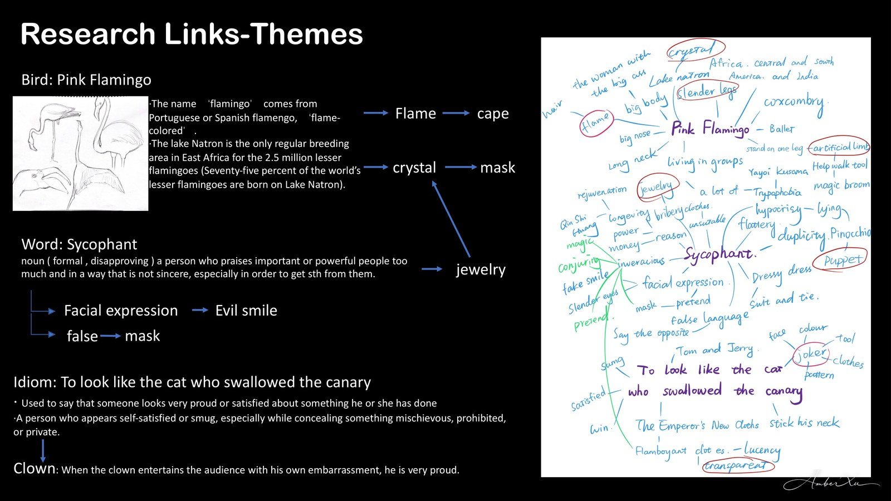
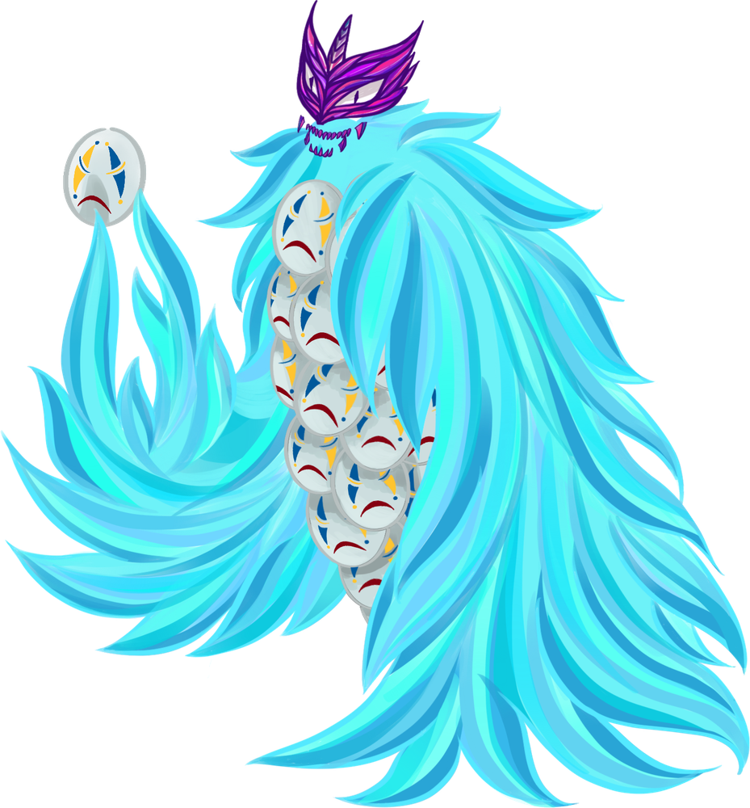
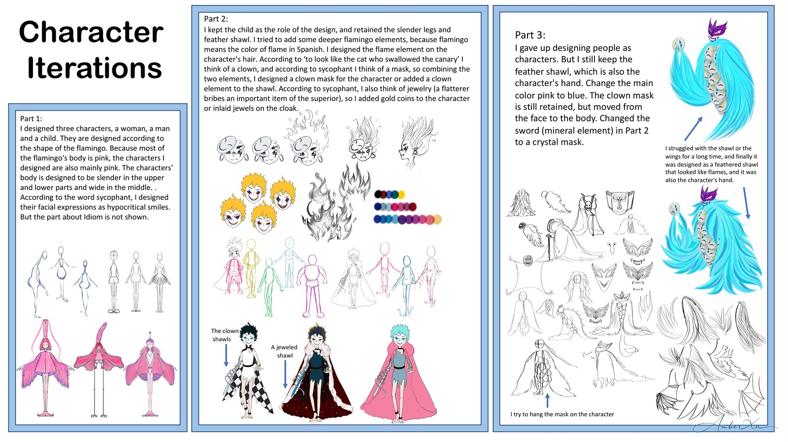
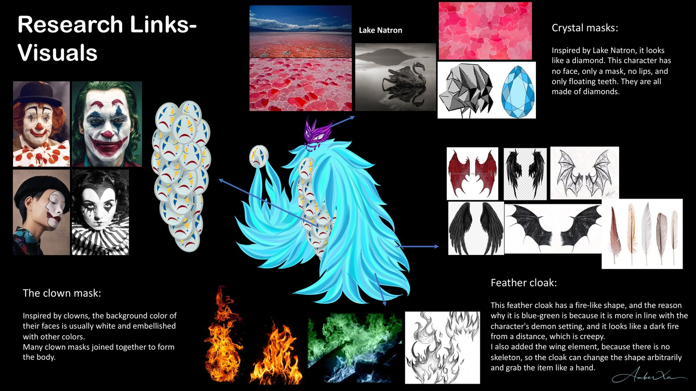
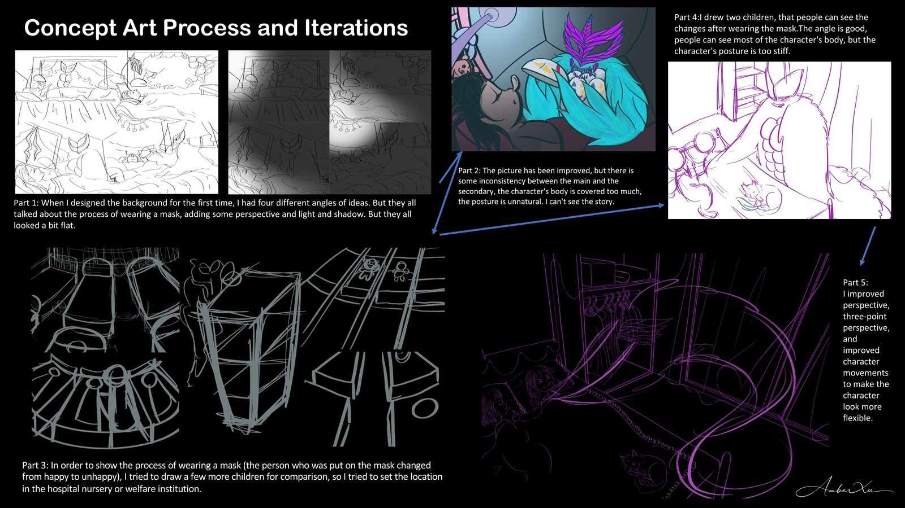
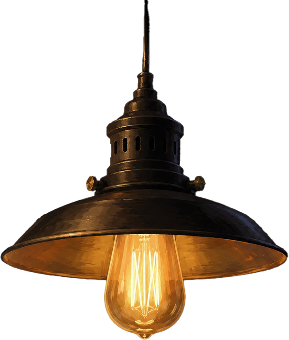
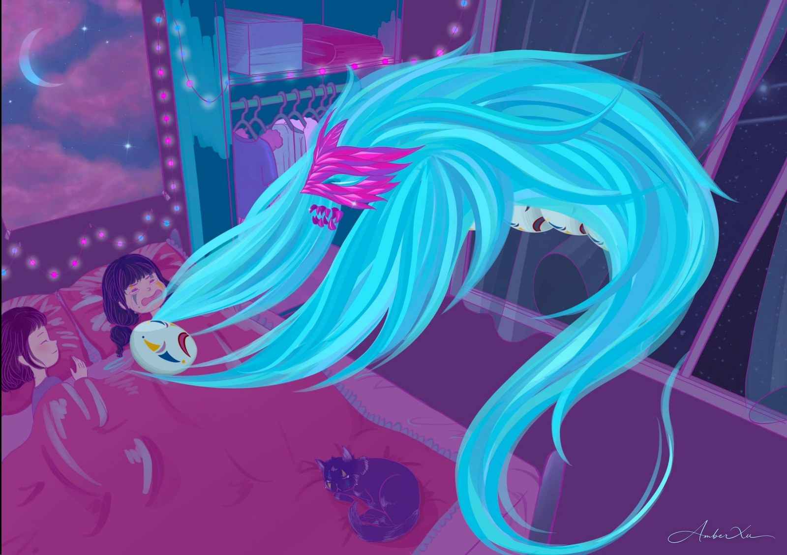
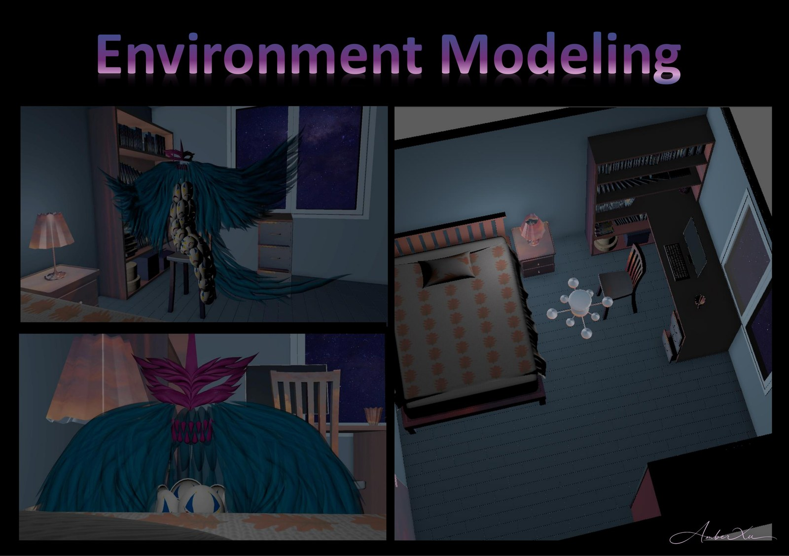

FIRST STEP
Words become feathers

A · DREAM · DEMON · IN · SEVEN · ACTS
Have you ever heard an urban legend?
Crystal chimes for wings · Masks that breathe peril · Tears for feast
Moonlight is a dream demon who slips into children's bedrooms under the cover of night. With feathers that shimmer like precious gems and a body made entirely of haunting masks, he is both mesmerizing and terrifying.
He places nightmare masks over sleeping faces, twisting dreams into cries. In silence, he collects the tears they shed — each one a piece of fear, feeding his endless hunger beneath the stars.


“He wears the smile of every child
he has ever stolen.”
— FIELD NOTE · MOONLIGHT
Moonlight began as a person and ended as a creature. Pink turned to teal, the smile slid from face to body, and a sword became a crystal mask.

Four motifs collide inside Moonlight's body — the painted clown, the crystalline lake, a feathered cloak of pale fire, and the soft horror of a porcelain mask.

Many passes through composition, perspective, and posture — until the bedroom told a story by itself.

Are you ready for night to fall?


The bedroom that hosts the nightmare — now rebuilt in 3D, so the light has somewhere real to fall.
